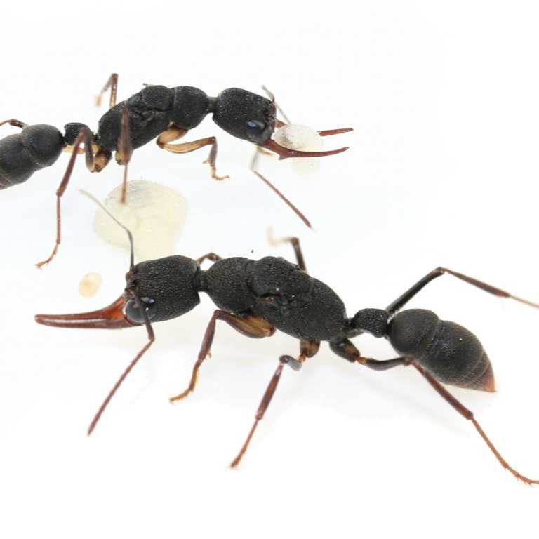
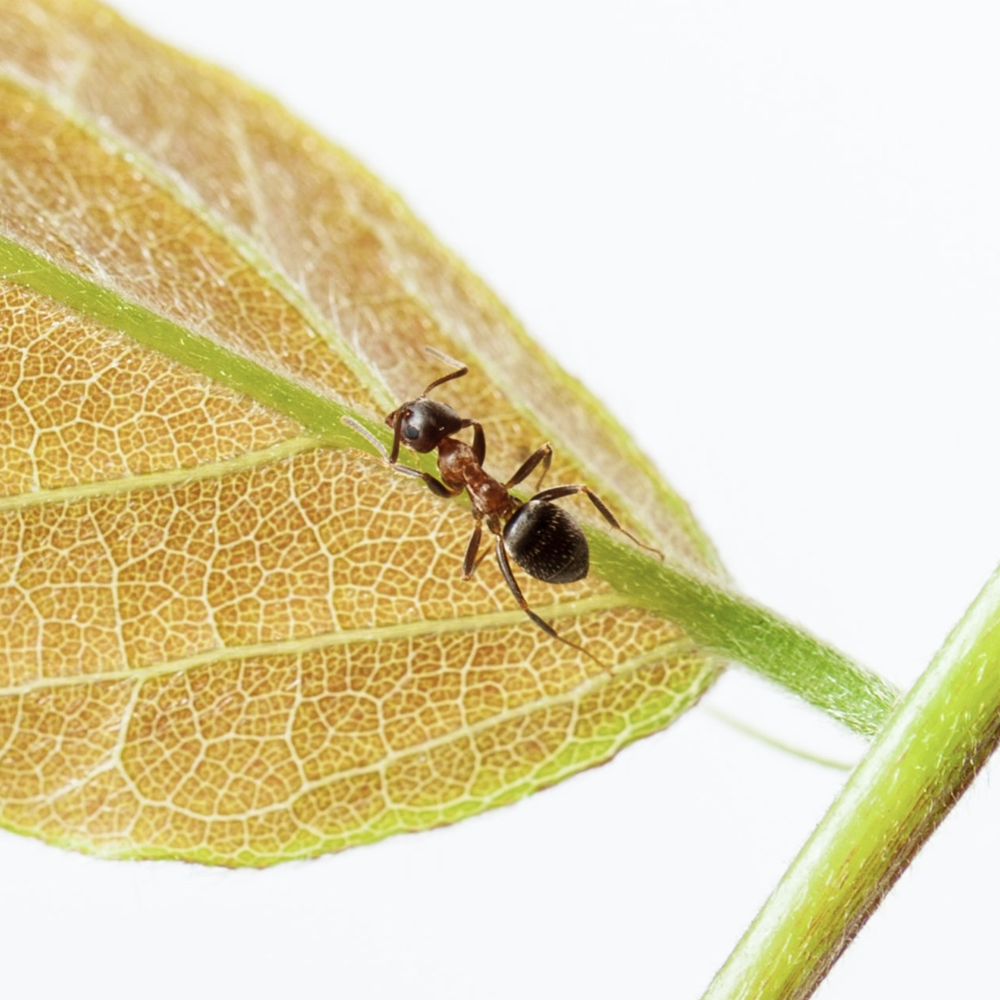
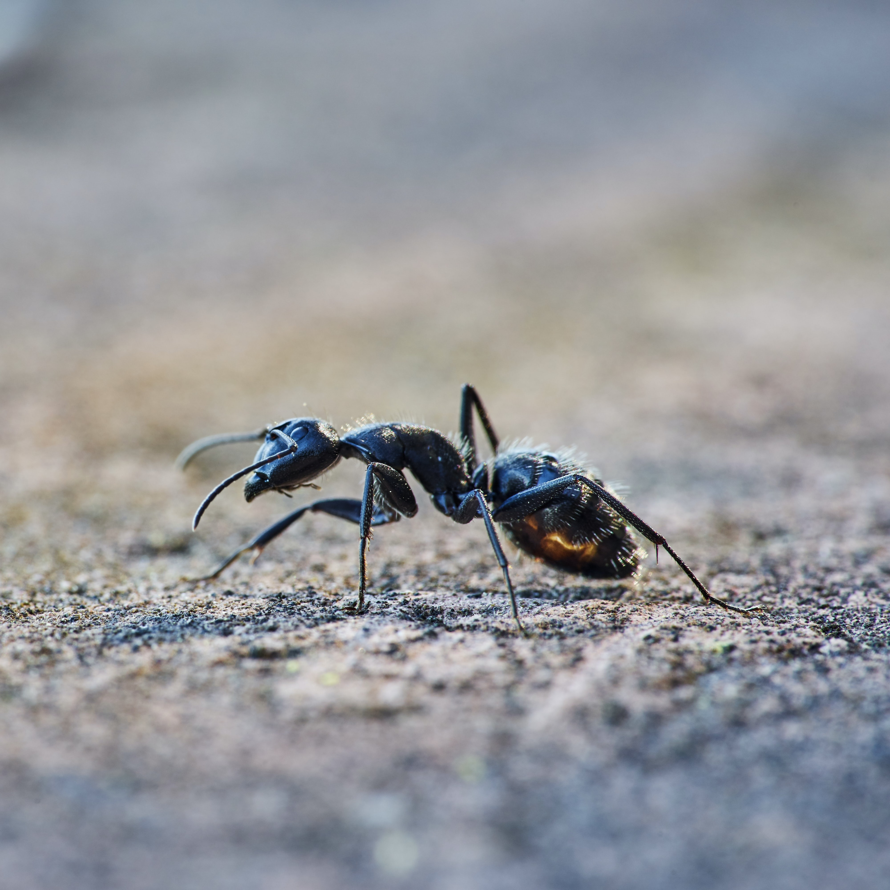

Some random species
Harpegnathos venator

Also known as the bulldog ant
Camponotus

These ants are social insects that prefer nesting in wood
Paraponera clavata

Paraponera clavata commonly known as the bullet ant, named for its extremely painful sting.
Lasius niger

The black garden ant is the familiar and abundant small ant that lives in gardens